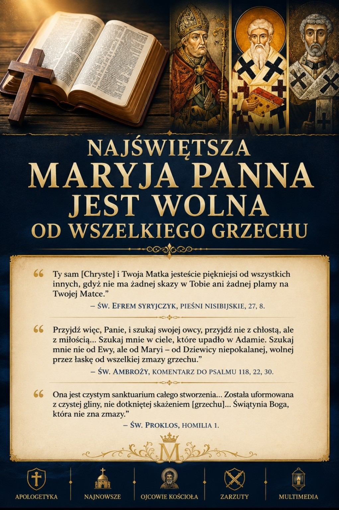

Najświętsza Maryja Panna Jest Wolna od Wszelkiego Grzechu!
Arka Nowego Przymierza a zarzuty redukcjonizmu. Biblijna i patrystyczna odpowiedź na protestancki traktat: „Święta Maryja zawsze grzesznica”.
Autor: Adrian Żalejko

SPIS ZAGADNIEŃ — KLIKNIJ, ABY PRZEJŚĆ DO SEKCJI
I. Anatomia błędu egzegetycznego: Uniwersalizm grzechu a wyjątki w Piśmie Świętym
Autorzy traktatu opierają swój „młot Pisma” na tekstach o powszechności grzechu, takich jak List do Rzymian 3:23 („Wszyscy bowiem zgrzeszyli”) oraz Rzymian 3:10 („Nie ma sprawiedliwego, ani jednego”). Stosując rygorystyczne reguły logiki formalnej, twierdzą oni, że skoro Maryja należy do ludzkości, to zdanie ogólno-przeczące musi obejmować również Ją.
Tego rodzaju interpretacja całkowicie ignoruje semicki i biblijny charakter języka Listu do Rzymian. Słowo „wszyscy” (pantes) w Biblii bardzo często nie oznacza absolutnej powszechności matematycznej, lecz odnosi się do zbiorowości w sensie ogólnym. Gdyby stosować logikę portalu reformowani.info bezwyjątkowo:
- Jezus Chrystus musiałby być grzesznikiem, ponieważ jako prawdziwy człowiek (Flp 2:7) wchodziłby w zakres słowa „wszyscy”. Protestanci natychmiast odpowiadają, że Chrystus jest wyjątkiem potwierdzonym przez inne wersety. Tym samym sami przyznają, że od reguły z Rzymian 3:23 istnieją wyjątki.
- Dzieci zmarłe przed narodzeniem lub osoby głęboko upośledzone intelektualnie, które fizycznie nie były zdolne do popełnienia grzechu osobistego, również podlegałyby potępieniu za „aktywne zgrzeszenie”.
Klucz biblijny leży w unikalnym przywileju opisanym w Ewangelii wg św. Łukasza 1:28, gdzie anioł Gabriel nazywa Maryję Kecharitomene. Tekst grecki posługuje się tu imiesłowem czasu przeszłego doskonałego (perfectum) w stronie biernej, co oznacza stan permanentny, trwały i zapoczątkowany w przeszłości: „całkowicie i ostatecznie napełniona łaską”. Gdzie jest doskonałość Bożej łaski, tam nie ma miejsca na panowanie ciemności (grzechu).
II. Biblijny Młot Na Heretyków — Czyli Sola Scriptura Przeciwko Protestantom
Problem ofiary oczyszczenia (Łk 2:22-24)
Portal reformowani.info upatruje dowodu na „grzeszność” Maryi w fakcie, że złożyła Ona w świątyni ofiarę przewidzianą przez Prawo Mojżeszowe za grzech (Kpł 12:1-8). Jest to argument skrajnie powierzchowny, który uderza rykoszetem w samego Jezusa Chrystusa.
- Chrystus przyjął chrzest Jana (Mt 3:13-17), który był „chrztem upamiętania na odpuszczenie grzechów” (Mk 1:4). Czy to oznacza, że Jezus był grzesznikiem potrzebującym odpuszczenia? Absolutnie nie. Uczynił to, aby „wypełnić wszelką sprawiedliwość” (Mt 3:15).
- Chrystus poddał się obrzezaniu (Łk 2:21), które było znakiem obmycia z nieczystości i wejścia w Przymierze, choć jako Syn Boży stał ponad Prawem.
Maryja, rodząc w sposób dziewiczy i nadprzyrodzony, nie podlegała biologicznemu prawu skażenia połogowego, jednak jako wierna córka Izraela poddała się zewnętrznym przepisom Prawa, aby nie wywoływać publicznego zgorszenia i zachować pokorę. Wyciąganie z rytualnego oczyszczenia wniosku o Jej moralnym grzechu jest fundamentalnym niezrozumieniem teologii biblijnych przymierzy.
Mit o „niewierze” i „szaleństwie” Maryi (Mk 3:21; J 2:4)
Publicyści protestanccy zarzucają Bogurodzicy brak wiary, powołując się m.in. na tekst z Marka 3:21, gdzie „bliscy” Jezusa idą Go pochwycić, mówiąc: „Odszedł od zmysłów”, oraz na obecność Maryi w wersie 31.
Egzegeza ta celowo miesza dwie różne grupy osób. W języku greckim zwrot „hoi par' autou” (w. 21) oznacza ogólnie krewnych, kuzynów lub współmieszkańców z Nazaretu, którzy dystansowali się od misji Jezusa (por. J 7:5: „Bo nawet Jego bracia nie wierzyli w Niego”). Maryja pojawia się dopiero w wersecie 31 wraz z owymi „braćmi” (kuzynami), lecz Jej motywacja jest zgoła inna – jako Matka spieszy tam, gdzie Jej Syn jest otoczony przez wrogi tłum faryzeuszy oskarżających Go o konszachty z Belzebubem (Mk 3:22). Maryja nie idzie Go „pętać jako szaleńca”, ale trwa przy Nim w obliczu narastającego niebezpieczeństwa.
Z kolei rzekome „skarcenie” Maryi w Kanie Galilejskiej („Co ze mną i z tobą, niewiasto?” J 2:4) w rzeczywistości jest uroczystym, semickim zwrotem idiomatycznym (Mah li walak), który nie oznacza pogardy, lecz ustalenie dystansu wobec ludzkich więzów w obliczu nadchodzącej „Godziny”. Co kluczowe, Jezus natychmiast czyni to, o co prosi Maryja, dokonując pierwszego cudu, co dowodzi potęgi Jej wstawiennictwa i absolutnej jedności myśli z Synem.
III. Starotestamentowa typologia bezgrzeszności Maryi
Typologia to biblijna metoda interpretacji, w której osoby, przedmioty lub wydarzenia ze Starego Testamentu (typy) zapowiadają i znajdują swoje doskonałe wypełnienie w Nowym Testamencie (antytypy). Tradycja patrystyczna od samych początków widziała w Maryi wypełnienie najświętszych figur Starego Przymierza. Jeśli Bóg wymagał absolutnej czystości dla przedmiotów materialnych, tym bardziej wymagał jej od żywej Kobiety, która miała nosić Jego Syna.
Arka Przymierza (Wj 25,10-11; Ap 11,19)
Arka była najświętszym przedmiotem Izraela, miejscem realnej obecności Boga (Szekina).
- Złoto i nienaruszone drewno: Bóg nakazał zbudować Arkę z drewna akacjowego (niepodatnego na gnicie) i pokryć ją szczerym złotem wewnątrz i zewnątrz. Ojcowie Kościoła (np. św. Efrem Syryjczyk) widzieli w tym zapowiedź Maryi: nienaruszone drewno to wolność od zgnilizny grzechu (pierworodnego), a szczere złoto to doskonałość łaski Ducha Świętego.
- Świętość naczynia: Arka zawierała w sobie słowo Boga na kamiennych tablicach, mannę z nieba i laseczkę Aarona. Maryja nosiła w swoim łonie Chrystusa – żywe Słowo Boga, prawdziwy Chleb z Nieba i Wiecznego Kapłana.
- Paralele u św. Łukasza: Ewangelista celowo konstruuje scenę Nawiedzenia św. Elżbiety (Łk 1,39-56) jako wypełnienie historii sprowadzenia Arki przez Dawida (2 Sm 6). Dawid woła z lękiem: „Jakże przyjdzie do mnie Arka Pańska?” (2 Sm 6,9) – Elżbieta woła: „A skądże mi to, że Matka mojego Pana przychodzi do mnie?” (Łk 1,43). Arka Dawida przebywała w domu Obed-Edoma przez trzy miesiące (2 Sm 6,11) – Maryja pozostaje u Elżbiety dokładnie trzy miesiące (Łk 1,56). Skoro dotknięcie materialnej Arki przez niepowołanego Uzzę skończyło się natychmiastową śmiercią z powodu naruszenia sacrum (2 Sm 6,6-7), to naczynie Nowej Arki – Maryja – musiało być całkowicie nienaruszone przez skazę grzechu, by mogło zamieszkać w Nim Bóstwo.
Krzew Gorejący (Wj 3,1-6)
Mojżesz widzi krzew, który płonie żywym ogniem Bożego Majestatu, ale nie ulega spaleniu ni zniszczeniu. Dla Ojców Kościoła (m.in. św. Grzegorza z Nyssy) to bezpośredni typ bezgrzeszności i dziewictwa Maryi. Ogień Bóstwa zstąpił w Jej łono, lecz nie zniszczył Jej ludzkiej natury, ani nie naruszył Jej czystości. Grzech jest w Biblii „cierniem i ostem” podlegającym spaleniu – fakt, że Krzew nie spłonął, wskazuje na brak materii grzechowej w Maryi.
IV. Kowadło Patrystyki: Jak naprawdę myśleli Ojcowie Kościoła?
Artykuł na portalu reformowani.info próbuje dokonać manipulacji, cytując Ojców Kościoła wypowiadających się o powszechności grzechu w kontekście walki z pelagianizmem, i fałszywie aplikując te słowa do Maryi. Przyjrzyjmy się dwóm kluczowym fundamentom, na które powołują się autorzy: św. Augustynowi i św. Fulgencjuszowi.
1. Św. Augustyn – Kluczowy świadek bezgrzeszności Maryi
Tekst protestancki cytuje traktat Enarrationes in Psalmos oraz pisma antyjuliańskie, by dowieść, że według Augustyna Maryja umarła z powodu grzechu pierworodnego. Jednak autorzy całkowicie przemilczają najsłynniejszy i najbardziej jednoznaczny cytat z Doktora Łaski. W dziele O naturze i łasce, pisząc przeciwko Pelariuszowi o powszechnej grzeszności ludzi, Augustyn czyni jeden jedyny, kategoryczny wyjątek:
„Z wyjątkiem zatem Świętej Dziewicy Maryi, co do której – ze względu na cześć należną Panu – nie chcę wpisywać absolutnie żadnego pytania, gdy mowa o grzechach (skąd bowiem wiemy, że dane Jej było więcej łaski ku pokonaniu grzechu w każdej jego postaci, Skoro zasłużyła na poczęcie i zrodzenie Tego, o którym wiadomo, że nie miał żadnego grzechu?) – z wyjątkiem więc tej Dziewicy, gdybyśmy mogli zgromadzić wszystkich owych świętych...”
— Św. Augustyn, De natura et gratia, 36, 42.Dla Augustyna cześć Chrystusa wymagała odrzucenia jakiejkolwiek myśli o grzechu osobistym Maryi. Kwestia dziedziczenia przez Nią natury Adamowej była przez niego rozważana fizycznie, lecz zawsze z zaznaczeniem, że łaska uświęcająca zadziałała w Jej wypadku w sposób uprzedzający i doskonały.
2. Św. Fulgencjusz z Ruspe i pojęcie „caro peccati”
Cytowany w artykule fragment z Listu 17, 13 Fulgencjusza brzmi w łacińskim oryginale:
„Caro quippe Mariae, quae in iniquitatibus humana fuerat solemnitate concepta, caro fuit utique peccati”
(Ciało Maryi, poczęte w nieprawościach według ludzkiego zwyczaju, było rzeczywiście ciałem grzechu).Czy to obala katolicki dogmat? Tylko w oczach kogoś, kto nie rozumie różnicy między pasywnym odkupieniem a błędem pelagiańskim. Kościół Katolicki w bulli Ineffabilis Deus (1854) wyraźnie ogłosił, że Maryja została zachowana od zmazy grzechu pierworodnego „intuita meritorum Christi” – czyli na mocy uprzedzających zasług Chrystusa. Maryja została odkupiona, ale przez profilaktykę, a nie przez leczenie.
Fulgencjusz z Ruspe walczył z mnichami scytyjskimi i pelagianami, którzy twierdzili, że człowiek może narodzić się czysty o własnych siłach. Podkreślał więc, że ciało Maryi podtrzymywało ludzką, upadłą kondycję (było poddane śmierci i cierpieniu – stąd caro peccati), aby Chrystus mógł przyjąć prawdziwe ludzkie ciało, a nie fantomowe (jak chcieli dokeci). Bezgrzeszność Maryi nie wynikała z Jej własnej natury (jak sugerowali pelagianie), lecz była całkowitym, darmowym i suwerennym darem łaski Boga, chroniącym Ją od momentu zaistnienia.
V. Głos Tradycji: Świadectwa Ojców Kościoła o bezgrzeszności Maryi
1. Św. Efrem Syryjczyk (306–373)
Diakon z Edessy i jeden z największych teologów Wschodu pisał o doskonałej czystości Chrystusa i Jego Matki, zestawiając Ich ze stanem Adama i Ewy przed grzechem pierworodnym:
„Ty sam [Chryste] i Twoja Matka jesteście piękniejsi od wszystkich innych, gdyż nie ma żadnej skazy w Tobie ani żadnej plamy na Twojej Matce.”
— Św. Efrem Syryjczyk, Pieśni Nisibijskie, 27, 8.„Dwie niewiasty były niewinne, dwie bezgrzeszne, Ewa i Maryja, były całkowicie równe. Jednak później jedna stała się przyczyną naszej śmierci, a druga przyczyną naszego życia.”
— Św. Efrem Syryjczyk, Komentarz do Diatessaronu.2. Św. Ambroży z Mediolanu (339–397)
Biskup Mediolanu i duchowy ojciec św. Augustyna definiował Maryję jako całkowicie wolną od jakiegokolwiek wpływu grzechu, będącą Arką Przymierza:
„Przyjdź więc, Panie, i szukaj swojej owcy, przyjdź nie z chłostą, ale z miłością... Szukaj mnie w ciele, które upadło w Adamie. Szukaj mnie nie od Ewy, ale od Maryi – od Dziewicy niepokalanej, wolnej przez łaskę od wszelkiej zmazy grzechu.”
— Św. Ambroży, Komentarz do Psalmu 118, 22, 30.3. Św. Augustyn z Hippony (354–430)
Główny autorytet, na który błędnie powołują się autorzy protestanccy. Augustyn wprost zakazał przypisywania Maryi jakiegokolwiek grzechu osobistego ze względu na godność Chrystusa:
„Z wyjątkiem zatem Świętej Dziewicy Maryi, co do której – ze względu na cześć należną Panu – nie chcę wpisywać absolutnie żadnego pytania, gdy mowa o grzechach (skąd bowiem wiemy, że dane Jej było więcej łaski ku pokonaniu grzechu w każdej jego postaci, skoro zasłużyła na poczęcie i zrodzenie Tego, o którym wiadomo, że nie miał żadnego grzechu?) – z wyjątkiem więc tej Dziewicy, gdybyśmy mogli zgromadzić wszystkich owych świętych... wszyscy zawołaliby: 'Jeśli mówimy, że grzechu nie mamy, samych siebie zwodzimy'.”
— Św. Augustyn, O naturze i łasce (De natura et gratia), 36, 42.4. Św. Proklos z Konstantynopola (zm. 446)
Uczeń św. Jana Chryzostoma i patriarcha Konstantynopola opisywał Maryję jako sanktuarium stworzone przez Boga, wolne od zepsuwających ludzkość skaz:
„Ona jest czystym sanktuarium całego stworzenia... Została uformowana z czystej gliny, nie dotkniętej skażeniem [grzechu]... Świątynia Boga, która nie zna zmazy.”
— Św. Proklos, Homilia 1.5. Św. Jan Damasceński (ok. 675–749)
Podsumowując całą teologię patrystyczną wieków wcześniejszych, Jan Damasceński pisał o Maryi w kontekście Jej Niepokalanego Poczęcia:
„O, błogosławione łono Anny, w którym rozwijał się powoli i rósł najświętszy zadatek! (...) Do tego łona nie śmiał zbliżyć się żaden grzech, ani pożądliwość nie naruszyła jego czystości.”
— Św. Jan Damasceński, Homilia o Narodzeniu Najświętszej Maryi Panny.VI. Analiza gramatyczna greckiego zwrotu Kecharitomene (Łk 1,28)
W pozdrowieniu anielskim z Ewangelii według św. Łukasza (Łk 1,28) kluczowym terminem jest κεχαριτωμένη (kecharitomēne). Gramatyka grecka tego jednego wyrazu niesie ze sobą potężny ładunek teologiczny, który wyklucza interpretację Maryi jako „zwykłej grzesznicy.”
- Rdzeń i czasownik bazowy (charitoō): Słowo to pochodzi od czasownika χαριτόω (charitoō). Czasowniki z końcówką -oō (tzw. kauzatywne) oznaczają wprowadzenie kogoś w stan opisany przez rzeczownik główny – w tym przypadku χάρις (charis – łaska/życzliwość). Charitoō oznacza zatem „napełniać łaską”, „transformować przez łaskę”.
- Aspekt czasu przeszłego doskonałego (perfectum): Prefiks κε- (ke-) wskazuje na czas perfectum. W gramatyce greckiej czas ten opisuje akcję, która została w pełni dokonana i sfinalizowana w przeszłości, ale jej skutki trwają permanentnie w teraźniejszości. Oznacza to, że Maryja została napełniona Bożą łaską zanim anioł przyszedł, a ten stan całkowitej czystości jest trwały i niezmienny.
- Strona bierna (passivum): Suffix -μένη (-menē) to końcówka imiesłowu strony biernej. Wskazuje, że Maryja jest odbiorcą tej czynności – to sam Bóg suwerennie i bez Jej ludzkich zasług uświęcił Ją swoją mocą.
- Zastosowanie jako imię/tytuł (użycie substantywalne): Archanioł Gabriel nie mówi: „Bądź pozdrowiona Maryjo, która jesteś pełna łaski”, lecz używa słowa Kecharitomene zamiast imienia własnego („Chaire, kecharitomene...”). W świecie biblijnym zmiana lub nadanie nowego imienia przez posłańca Boga oznacza definitywne określenie tożsamości i istoty danej osoby (jak Abram\Abraham; Szymon\Piotr). Tożsamością Maryi w oczach Boga jest całkowite uświęcenie i brak grzechu.
W Ef 1,6 św. Paweł używa tego samego czasownika wobec wiernych, ale w formie aorystu (echaritōsen – „obdarzył łaską”), co oznacza czynność punktową. Wyjątkowa forma perfectum (stan stały i uprzedzający) w Nowym Testamencie została zarezerwowana wyłącznie dla Maryi.
VII. Wnioski: Typologiczna spójność wiary
Stanowisko zaprezentowane na portalu reformowani.info redukuje Maryję do roli „zwykłej grzesznicy”, co w konsekwencji uderza w czystość samego Wcielenia. Tradycja chrześcijańska od II wieku (św. Justyn Męczennik, św. Ireneusz z Lyonu) widziała w Maryi Nową Ewę. Tak jak pierwsza Ewa była niepokalana w Edenie, lecz przez nieposłuszeństwo przyniosła śmierć, tak Nowa Ewa (Maryja), będąc czystą, przez swoje Fiat (posłuszeństwo) przyniosła Życie.
Odrzucenie bezgrzeszności Maryi zamyka protestancką egzegezę w pułapce racjonalizmu, który nie potrafi pogodzić uniwersalizmu upadku Adama z suwerenną, uprzedzającą wszechmocą Boga, który dla swojego Syna przygotował nienaruszoną i świętą Arkę – żywą Świątynię Ducha Świętego.
VIII. Teologia Zachodnia a współczesna teologia Bizantyjska – porównanie
Pomiędzy prawosławiem a katolicyzmem istnieje głęboka zgodność liturgiczna i duchowa co do tego, że Maryja była całkowicie bezgrzeszna i wolna od jakichkolwiek grzechów osobistych przez całe swoje życie. Różnica dotyczy wyłącznie dogmatycznego ujęcia momentu Jej poczęcia, co wynika z odmiennej definicji grzechu pierworodnego.
| Zagadnienie | Katolicyzm | Prawosławie |
|---|---|---|
| Grzech osobisty | Maryja przez całe życie była całkowicie wolna od jakiegokolwiek grzechu osobistego i najmniejszej dobrowolnej skazy moralnej. | Maryja jest Panagia (Cała Święta) i Achrantos (Nieskalana). Tradycja i liturgia prawosławna wykluczają popełnienie przez Nią jakiegokolwiek grzechu osobistego. |
| Definicja Grzechu Pierworodnego | Katolicki rozumiany augustyńsko: jako dziedziczna wina (reatus) oraz stan braku łaski uświęcającej, przekazywany z natury Adama. | Prawosławny rozumiany jako „grzech przodków” (propatorikon hamartema): dziedziczy się nie winę Adama, lecz konsekwencje jego upadku (śmiertelność, podatność na cierpienie, skłonność do grzechu). |
| Niepokalane Poczęcie (8 grudnia 1854) | Katolicki dogmat wiary. Maryja od pierwszej chwili poczęcia, mocą uprzedzających zasług Chrystusa, została zachowana od zmazy grzechu pierworodnego (wlanie łaski od początku istnienia). | Prawosławne odrzucenie definicji dogmatycznej. Prawosławie uważa dogmat za niepotrzebny, ponieważ skoro nie ma dziedziczenia prawnej winy Adama, Maryja nie musiała być z niej „prawnie” uwalniana w łonie matki. |
| Stan Maryi przed Zwiastowaniem | W katolicyzmie była w pełni uświęcona i napełniona łaską od momentu poczęcia w łonie św. Anny. | W prawosławiu była śmiertelna i posiadała osłabioną ludzką naturę (jak wszyscy), ale mocą własnej woli i łaski Bożej nie zgrzeszyła. Ostateczne, pełne uświęcenie i przebóstwienie dokonało się w Niej w momencie Zwiastowania przez Ducha Świętego. |
| Modlitwa i Liturgia | W Katolicyzmie cześć oddawana Maryi jako Niepokalanie Poczętej Królowej. | We Boskiej Liturgii (np. św. Jana Chryzostoma) Maryja jest oficjalnie wysławiana jako: „Godna czci, całkowicie bez skazy [Panamometon] i Matka Boga naszego”. |
Podsumowanie różnic
Różnica ma charakter metodologiczny i definicyjny, a nie moralny. Katolicyzm kładzie nacisk na moment poczęcia jako suwerenne działanie Boga, który zabezpiecza naczynie dla swojego Syna. Prawosławie kładzie nacisk na synergia (współpracę) wolnej woli Maryi z łaską Bożą w procesie stopniowego uświęcania, którego szczytem było Wcielenie. Oba Kościoły stanowczo odrzucają protestancki redukcjonizm portalu reformowani.info, który przypisuje Bogurodzicy grzechy, niewiarę czy pogardę wobec Chrystusa.
IX. Podsumowanie apologetyczne
Zarówno precyzyjna, natchniona struktura gramatyczna języka greckiego w Nowym Testamencie (Kecharitomene), jak i jednomyślny głos Ojców Kościoła od Syrii po Afrykę Północną, ukazują Maryję jako całkowicie czystą, uświęconą i bezgrzeszną. Protestancka próba uczynienia z Niej upadłej i niewierzącej kobiety wynika z ignorancji wobec semantycznego bogactwa języka biblijnego oraz wybiórczego traktowania pism patrystycznych.
Źródła
- Facebook — Kecharitomene
- Locus Mariologicus — Kecharitomene
- Catholic Answers — Full of Grace versus Highly Favored
- Patheos — Luke 1:28
- Ichthys — Mary, Full of Grace
- St Pius X Mulund — Mary's title Full of Grace
Teksty biblijne i patrystyczne przywołane w artykule: Rz 3,10.23; Łk 1,28; Łk 1,39–56; Łk 2,21–24; J 2,1–11; Mk 3,21–31; Ef 1,6; Wj 25,10–11; Wj 3,1–6; 2 Sm 6; Ap 11,19; Kpł 12,1–8; Mt 3,13–17; Mk 1,4; Flp 2,7.
Jeżeli cenisz tę pracę, możesz wesprzeć rozwój portalu.
☕ POSTAW KAWĘ ADRIANOWI